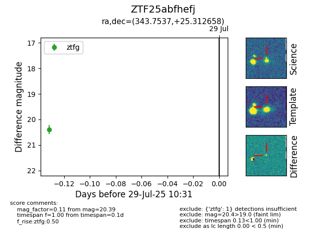

Target ZTF25abfhefj at 2025-07-29 10:31, see:
FINK: fink-portal.org/ZTF25abfhefj
Lasair: lasair-ztf.lsst.ac.uk/objects/ZTF25abfhefj
ALeRCE: alerce.online/object/ZTF25abfhefj
alt names
ZTF25abfhefj (ztf,fink)
coordinates:
equatorial (ra, dec) = (343.7537,+25.31266)
galactic (l, b) = (92.2353,-30.52970)
photometry
last ztfg=20.39
1 ztfg detections
